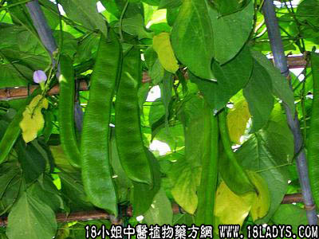

刀豆壳(中药材植物名:刀豆)(植物科目:蝶形花科)

古籍名：刀豆《本草纲目》。
植物名：刀豆。
生长环境：本品为草质藤本。是栽培的豆类植物，春种秋收。
分布：广州附近农村有栽培，但不常见。另一种野生“海刀豆树”则生长普遍，但荚果仅长约10厘米，可以区别。
入药部分：果壳。
采集期：秋。
自采地点：家种。
性味：性平、味甘。
功能：平呃逆、消滞。
主治、用量和用法：1、呃逆；2、食滞；3、鼻渊，以上三项，俱用于果壳5钱至1两，清水煎服。
（方歌）刀豆壳兮治症多，鼻渊呃逆食滞瘥，五钱一两煎水服，止呃宽中用无忧。